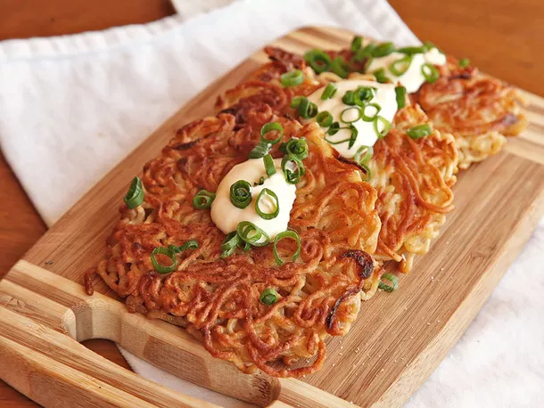

The Ramen Latkes

Ingredients
- 2 – 3 packs instant ramen noodles, cooked and drained
- 1 egg
- 1 tablespoons garlic powder
- canola oil for frying
- 1/2 cup soy sauce
- 1 – 1.5 tsp Sriracha
- 1/2 cup mayonnaise
- green onions, sliced
Instructions
- Cook the ramen noodles as directed on the back of the package making sure to omit any flavor packets it came with. Drain and place in a bowl. Cover and cool for roughly 1 – 2 hours minimum.
- Once cool, mix noodles with one egg and the garlic powder.
- Divide the noodles up either in large muffin tins or ramekins, if you have them. Or, you can do what I did and divide them up amongst a variety of small bowls and glasses. You do NOT want to make these more than 1 inch of thickness so if using something other than muffin tins or ramekins, be careful of how many noodles you stack in there.
- Place divided noodles in the refrigerator uncovered. Let cool for a minimum of 2 hours and a maximum of 10.
- Once your refrigeration period is done, heat 5 Tbsp of canola oil in a small frying pan (I do recommend frying these one at a time). Test the oil to make sure it’s hot by splashing a small drop of water into the oil. If the water sizzles, you’re ready.
- Drop one ramekin of noodles into the hot oil and reshape into latke shape. Let fry for roughly 2 – 3 minutes and then flip. Add 1 tsp of soy sauce to latke after the first flip. Cook on the other side for another 2 – 3 minutes. Repeat until nice and brown for a total of roughly 6 – 8 minutes each.
- Remove latke from pan and let dry on a plate lined with paper towel.
- To make the sriracha mayo: combine Ssriracha and mayo in a bowl. Taste as you stir, adding more according to your preference. Serve a dollop on top of each latke and sprinkle with sliced green onions.
Return to the mainpage